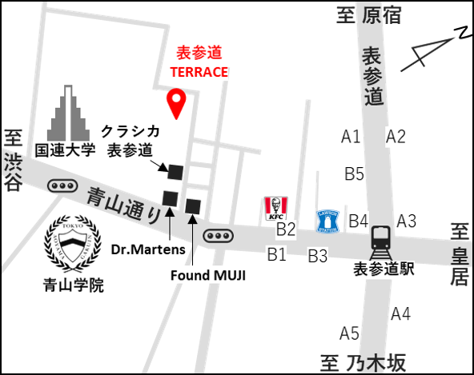

ご挨拶
謹啓 空の色もいつしか秋めき皆々様にはますますご清栄の事とお慶び申し上げます
さて このたび 私どもの婚約が整い結婚式を挙げることになりました
つきましては 日頃お世話になっている皆様をお招きしてささやかな宴を催したいと存じます
ご多用中 誠に恐縮ではございますが ぜひご出席賜りますようお願い申し上げます
謹白
記
- 日時
- 令和2年10月31日(土曜日)
- 受付
- 午後3時半
- 挙式
- 午後4時
- 披露宴
- 午後5時
※挙式30分前より開場となります
- 場所
- 表参道テラス
〒150-0001 東京都渋谷区神宮前5-47-6
会場Webサイト
会場アクセス
※画像をクリックするとGoogle Mapsでご覧いただけます
最寄り駅から
- 地下鉄「表参道駅」B2出口より徒歩5分
B2出口から直進し、右手の「無印良品(Found MUJI)」を右折
※エレベータをご利用の際はB3出口をご利用ください - 都営バス渋谷駅 東口ターミナル[渋88]バス新橋駅前行き「青山学院前」下車 徒歩3分
最寄り駅まで
- JR東京駅
- 東京メトロ 東京駅⇒(丸の内線 新宿方面行9分)⇒赤坂見附駅⇒(銀座線 渋谷方面5分)⇒表参道駅
- JR東京駅
- 東京メトロ 大手町駅⇒(千代田線 代々木上原行13分)⇒表参道駅
- 羽田空港
- 京急 羽田空港第1・第2ターミナル駅⇒(京急空港線 快特 印旛医大行23分)⇒新橋駅⇒(銀座線 渋谷方面11分)⇒表参道駅
新型コロナウイルス感染症(COVID-19)について
新型コロナウイルス感染症(COVID-19)に関連して ご出席にあたりご心配な面もおありと拝察いたします
当日は以下の対策を徹底して参ります
- 定期的な除菌と清掃
- 空間にゆとりをもたせた席配置
- こまめな換気
- 除菌シートのご用意
- マイクの徹底消毒
- 式場スタッフの体調チェックおよびマスク・手袋着用
参列の皆様にも下記をお願いいたします
- 風邪・発熱の方はご参列をお控えください
- ご来館の際 式場スタッフによる検温・体調管理アンケートへご協力ください
- 披露宴会場のロビー お化粧室にアルコール除菌スプレーをご用意しておりますので ご活用ください
- ご来館時に 手洗い・うがいへご協力ください
- ご来館中に体調が悪化されたり ご気分がすぐれなくなった際は すぐにお申し出ください
- 会場スタッフに携帯電話・カメラを預けての写真撮影のご依頼はご遠慮ください
なお結婚式・披露宴というイベントの性格を鑑み 式中・宴中のマスクの着用はご各人の任意とさせていただきます
安心してお過ごしいただくためにも 前記項目へのご協力をあらためてお願いいたします
詳しい情報については表参道TERRACE公式サイトTOPに掲載されております「新型コロナウイルスなどの感染症予防および拡散防止対策について」をご参照くださいますようお願いいたします